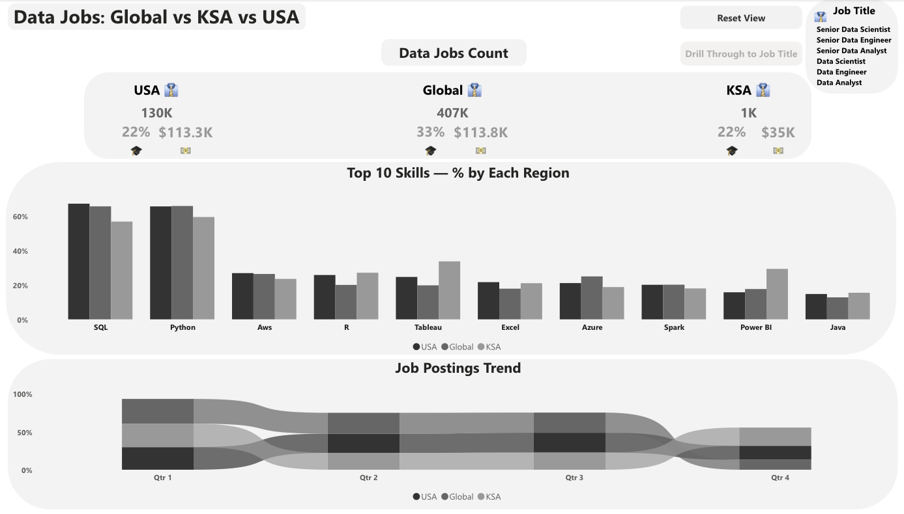
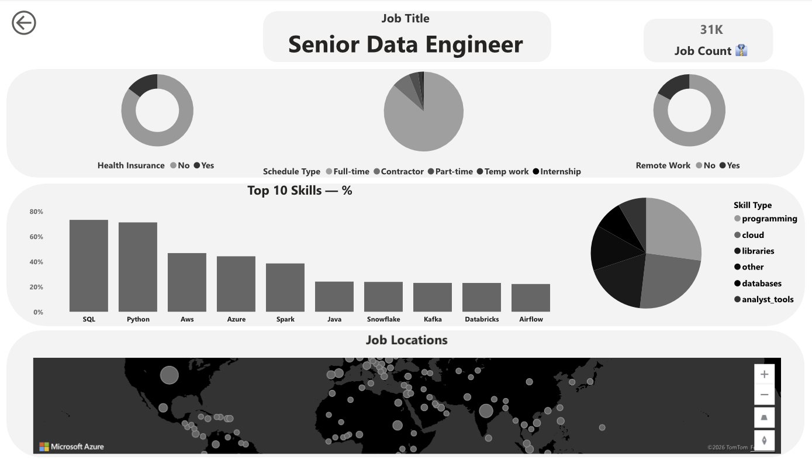

Data Jobs Dashboard
An interactive Power BI dashboard comparing the data job market in Saudi Arabia, the USA, and worldwide.

Overview
Which skills do data jobs ask for, and how does the Saudi market compare with the US and the rest of the world? This dashboard answers that question using real job postings, letting the viewer compare the three regions side by side and drill down to individual job titles.
Data
A star schema built around a job postings fact table with related skills tables, cleaned and prepared in Power Query. Source: data_jobs dataset by Luke Barousse (Apache 2.0 license), collected from Google job search results via SerpApi. Modeling, cleaning, and analysis by me.
Page 1: Market overview
All three markets (USA, Global, and KSA) are shown side by side. Each region has a card with its number of postings, the share of postings requiring a certification, and the median yearly salary. A clustered bar chart ranks the top 10 skills by percentage of postings in each region, and a ribbon chart tracks how postings are distributed across quarters. A job title list filters the page, and a drill-through button opens a detailed view for the selected title.

Page 2: Job title deep dive
A drill-through page for one of six data job titles, reached from the first page. The title at the top updates dynamically through a DAX measure. The page breaks down the selected role by health insurance, schedule type, and remote work, shows its top 10 skills with a split by skill type, and maps where the postings are located.

Analytical decisions
- Percentages instead of counts when comparing skills across regions, because the number of postings differs greatly between them. Raw counts would simply show that bigger markets have more of everything.
- Salary kept as a static figure for Saudi Arabia. Salary data there is sparse, so I dropped salary trends over time instead of forcing a comparison the data can't support.
- Regions fixed inside the measures, job title filtered from the page. This is why the three regions always appear side by side for comparison, while the job title list stays interactive.
Key findings
- SQL and Python lead the skill demand in all three markets, though SQL appears in a smaller share of Saudi postings (roughly 57%) than in US postings (roughly 67%).
- Power BI and Tableau stand out in KSA: Power BI appears in roughly 30% of Saudi postings against roughly 16% in the USA, and Tableau in roughly 34% against 25%.
- KSA has only about 1K postings compared with 130K in the USA, so its percentages are less stable and should be read as indicative.
Tools
- Power BI
- DAX
- Power Query
Download the project file
Want to explore the dashboard yourself? Download the Power BI file (opening it requires Power BI Desktop):